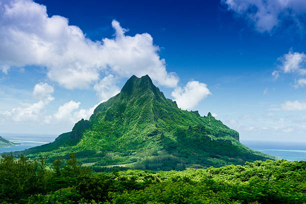
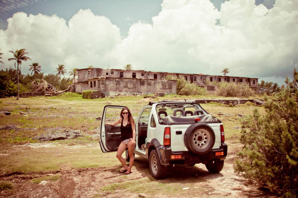

Information About Activities

Most people visit Taniti to enjoy the beaches, explore the rainforest, and visit the volcano. However, there
are other things to do, including visiting a local history museum, going on chartered fishing tours,
snorkeling, zip-lining in the rainforest, visiting several pubs, including a microbrewery, dancing at a new
dance club, seeing a movie, taking helicopter rides, playing at an arcade, visiting art galleries, and
bowling. Also, a nine-hole golf course should be operational by next year.
Many of these activities are in Merriton Landing, a rapidly developing area on the north side of
Yellow Leaf Bay.
Most tourists spend most of their time in Taniti City, which boasts native architecture and nearby white,
sandy beaches that encircle Yellow Leaf Bay. Most tourists spend most of their time in Taniti City,
which boasts native architecture and nearby white, sandy beaches that encircle Yellow Leaf Bay.

 Other popular activities include:
Other popular activities include:
- Boat or bus tours of the island.
- Hikes in the rainforest.
- Visits to Taniti’s active volcano.